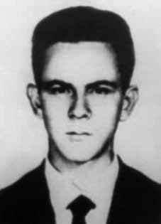

Divino
Ferreira
de Souza
CIRCUNSTÂNCIAS DA MORTE
Segundo o Relatório Arroyo, a morte de Divino teria ocorrido em 13 de outubro de 1973, na companhia de outros guerrilheiros. Neste dia, Antônio Alfredo de Lima e André Grabois (Zé Carlos) foram apanhar porcos para a alimentação na antiga roça de Alfredo, chegando ao local por volta das 9h. Após o abate, próximo às 12h, Zé Carlos, Nunes (Divino Ferreira de Souza), Alfredo, Zebão (João Gualberto Calatrone) e João (Dermeval da Silva Pereira) preparavam-se para sair, quando Alfredo ouviu um barulho. De imediato, apareceram soldados apontando as armas e atirando sobre o grupo. João conseguiu escapar, mas os outros foram mortos. O Diário de Maurício Grabois também faz referência às circunstâncias da morte de Divino Ferreira de Souza, narrando o mesmo episódio. No dia 13 de outubro de 1973, o grupo composto por Zé Carlos, Nunes, João, Zebão e Alfredo foram apanhar porcos em uma capoeira abandonada quando cometeram uma série de deslizes, de acordo com Maurício. Eles teriam matado os porcos a tiros, acendido um fogo e permanecido por tempo demasiado no local, chamando a atenção de militares que circulavam na região. Foram surpreendidos e metralhados, escapando apenas João. Em declarações concedidas ao Ministério Público Federal, em 2001, e citadas pelo livro “Dossiê Ditadura”, os camponeses Manoel Leal de Lima (Vanu) e Antônio Félix da Silva, que serviram de mateiros ao Exército no período da guerrilha, atestam que Divino sobreviveu aos primeiros tiroteios e, detido com vida, recebeu injeções anestésicas para suportar os interrogatórios militares. Segundo estes depoimentos, disponíveis no “Dossiê Ditadura”, Divino teria sido executado sumariamente na Casa Azul, em Marabá. Vanu, ex-guia do exército, depôs que acompanhava um grupo formado por: o Major Adurbo [Asdrúbal – coronel Lício Augusto Ribeiro Maciel], o sargento Silva, um cabo e cinco soldados, em uma localidade denominada Caçador, quando encontraram os cinco guerrilheiros já mencionados. Eles estavam matando porcos na casa do velho Geraldo quando os militares abriram fogo e mataram Zé Carlos, Alfredo e Zebão. Nunes teria sido baleado e morrido em Marabá, no dia seguinte. Já Antônio Félix da Silva declarou que ouviu de Vanu mais informações sobre Divino. O guia teria colocado o corpo dos três guerrilheiros mortos em cima de uma égua e conduzido da fazenda do Geraldo Martins – onde ocorrera o confronto – até a casa do pai de Antônio Félix – onde foram enterrados. Vanu teria lhe relatado também que Nunes teria sido ferido no confronto e levado na direção de Bom Jesus a uma clareira para pouso de helicóptero. O coronel Lício Augusto Maciel afirmou, em entrevista ao jornalista Luiz Maklouf, mencionada pelo livro Dossiê Ditadura, que Divino sobreviveu ao tiroteio e recebeu injeções de morfina ao longo da noite: Os únicos que se salvaram foram o João Araguaia, que fugiu, e o Nunes, que ficou muito ferido. Eles ficaram lá a noite inteira. Eu via lá os caras, mas eu não sou médico, nem enfermeiro, não estava nem aí pra esse troço. Mas os caras da minha equipe iam lá, davam morfina, injeção, os primeiros socorros que a gente levava […] Passaram a noite dando morfina pros caras. Acabaram com o estoque. Mas três morreram. No dia seguinte estava todo mundo esticado lá. Nós botamos em cima de muares, arranjados pelos dois guias, e levamos. […] Esses corpos eu entreguei pro PIC, o PIC identificou e daí a três ou quatro dias chegou a informação. Era o grupo mais importante de toda a guerrilha. Em depoimento prestado na Câmara dos Deputados, em 26 de junho de 2005, Lício Augusto Maciel confirmou ter atirado em André Grabois, que acompanhava Divino no episódio: Quase encostei o cano da minha arma em André Grabois: “Solte a arma!”. Ele deu aquele pulo e a arma já estava na minha direção. Não deu outra: os meus companheiros, que chegavam, acertariam o André, caso eu tivesse errado, o que era muito difícil, pois estava a um metro e meio, dois metros dele. iv O Relatório do Ministério da Marinha encaminhado ao ministro da Justiça Maurício Corrêa, em 1993, afirma que Divino morreu em 14/12/1973, dois meses após o confronto que resultou na sua prisão.v Esta datação pode ser resultado tanto de uma imprecisão relativa ao mês de morte de Divino quanto um indício de que ele teria ficado sob custódia do Exército por esse tempo, sendo executado sumariamente depois disso. A maioria dos relatos converge para a primeira hipótese, na qual Divino teria sido executado sumariamente no dia seguinte à sua prisão, portanto, no mês de outubro. Neste sentido, no Relatório do CIE, Ministério do Exército, consta que ele teria morrido em 14 de outubro de 1973. vi Em depoimento prestado à Comissão Nacional da Verdade (CNV), o segundo tenente da Polícia Militar de Goiás João Alves de Souza afirma que Divino ficou sob custódia dos militares comandados por Lício Augusto Ribeiro Maciel, sendo “eliminado” posteriormente.
According to the Arroyo Report, Divino's death occurred on October 13, 1973, in the company of other guerrillas. On this day, Antônio Alfredo de Lima and André Grabois (Zé Carlos) went to collect pigs for food in Alfredo's old farm, arriving at the place around 9 am. After the slaughter, around 12pm, Zé Carlos, Nunes (Divino Ferreira de Souza), Alfredo, Zebão (João Gualberto Calatrone) and João (Dermeval da Silva Pereira) were preparing to leave, when Alfredo heard a noise. Immediately, soldiers appeared pointing their weapons and shooting at the group. João managed to escape, but the others were killed. Maurício Grabois' Diary also makes reference to the circumstances of Divino Ferreira de Souza's death, narrating the same episode. On October 13, 1973, the group made up of Zé Carlos, Nunes, João, Zebão and Alfredo went to catch pigs in an abandoned coop when they committed a series of slips, according to Maurício. They allegedly shot the pigs, lit a fire and remained in the area for too long, attracting the attention of soldiers who were circulating in the region. They were surprised and machine-gunned, with only João escaping. In statements given to the Federal Public Ministry in 2001, and cited in the book “Dossiê Ditadura”, peasants Manoel Leal de Lima (Vanu) and Antônio Félix da Silva, who served as bushmen for the Army during the guerrilla period, attest that Divino survived the first shootings and, detained alive, received anesthetic injections to withstand military interrogations. According to these testimonies, available in the “Dictadura Dossier”, Divino would have been summarily executed at Casa Azul, in Marabá. Vanu, a former army guide, testified that he was accompanying a group made up of: Major Adurbo [Asdrúbal – Colonel Lício Augusto Ribeiro Maciel], Sergeant Silva, a corporal and five soldiers, in a location called Caçador, when they encountered the five guerrillas already mentioned. They were killing pigs at old Geraldo's house when the military opened fire and killed Zé Carlos, Alfredo and Zebão. Nunes was reportedly shot and died in Marabá, the following day. Antônio Félix da Silva declared that he heard more information about Divino from Vanu. The guide would have placed the bodies of the three dead guerrillas on top of a mare and driven them from Geraldo Martins' farm – where the confrontation had taken place – to the house of Antônio Félix's father – where they were buried. Vanu also told him that Nunes had been injured in the confrontation and taken towards Bom Jesus to a clearing for a helicopter landing. Colonel Lício Augusto Maciel stated, in an interview with journalist Luiz Maklouf, mentioned in the book Dossier Ditadura, that Divino survived the shooting and received morphine injections throughout the night: The only ones who were saved were João Araguaia, who fled, and Nunes, who was seriously injured. They stayed there all night. I saw the guys there, but I'm not a doctor or nurse, I didn't care about that stuff. But the guys on my team went there, gave morphine, injections, the first aid that we provided […] They spent the night giving the guys morphine. They ran out of stock. But three died. The next day everyone was there. We put them on top of mules, arranged by the two guides, and took them. […] I handed over these bodies to the PIC, the PIC identified them and within three or four days the information arrived. It was the most important group in the entire guerrilla. In a statement given in the Chamber of Deputies, on June 26, 2005, Lício Augusto Maciel confirmed that he had shot André Grabois, who accompanied Divino in the episode: I almost touched the barrel of my gun against André Grabois: “Drop the gun!”. He made that jump and the gun was already in my direction. There was no other way: my companions, who arrived, would hit André, if I had missed, which was very difficult, as I was one and a half meters, two meters away from him. iv The Report from the Ministry of the Navy sent to the Minister of Justice Maurício Corrêa, in 1993, states that Divino died on 12/14/1973, two months after the confrontation that resulted in his arrest. Most reports converge on the first hypothesis, in which Divino would have been summarily executed the day after his arrest, therefore, in the month of October. In this sense, the CIE Report, Ministry of the Army, states that he died on October 14, 1973. vi In a statement given to the National Truth Commission (CNV), the second lieutenant of the Military Police of Goiás João Alves de Souza states that Divino was in the custody of the military commanded by Lício Augusto Ribeiro Maciel, and was subsequently “eliminated”.
Según el Informe Arroyo, la muerte de Divino se produjo el 13 de octubre de 1973, en compañía de otros guerrilleros. Ese día, Antônio Alfredo de Lima y André Grabois (Zé Carlos) fueron a recoger cerdos para alimentarse en la antigua hacienda de Alfredo, llegando al lugar alrededor de las 9 de la mañana. Después de la masacre, alrededor de las 12:00 horas, Zé Carlos, Nunes (Divino Ferreira de Souza), Alfredo, Zebão (João Gualberto Calatrone) y João (Dermeval da Silva Pereira) se disponían a salir, cuando Alfredo escuchó un ruido. Inmediatamente, aparecieron soldados apuntando con sus armas y disparando contra el grupo. João logró escapar, pero los demás fueron asesinados. El Diario de Maurício Grabois también hace referencia a las circunstancias de la muerte de Divino Ferreira de Souza, narrando el mismo episodio. El 13 de octubre de 1973, el grupo formado por Zé Carlos, Nunes, João, Zebão y Alfredo fue a cazar cerdos en un gallinero abandonado cuando cometieron una serie de deslices, según Maurício. Presuntamente dispararon a los cerdos, prendieron fuego y permanecieron en la zona demasiado tiempo, llamando la atención de los soldados que circulaban por la región. Fueron sorprendidos y ametrallados, escapando sólo João. En declaraciones dadas al Ministerio Público Federal en 2001, y citadas en el libro “Dossiê Ditadura”, los campesinos Manoel Leal de Lima (Vanu) y Antônio Félix da Silva, quienes sirvieron como bosquimanos para el Ejército durante el período guerrillero, dan fe de que Divino sobrevivió a los primeros tiroteos y, detenido con vida, recibió inyecciones de anestésicos para resistir los interrogatorios militares. Según estos testimonios, disponibles en el “Dossier Dictadura”, Divino habría sido ejecutado sumariamente en Casa Azul, en Marabá. Vanu, ex guía del ejército, declaró que acompañaba a un grupo integrado por: el mayor Adurbo [Asdrúbal – coronel Lício Augusto Ribeiro Maciel], el sargento Silva, un cabo y cinco militares, en un lugar denominado Caçador, cuando se encontraron con los cinco guerrilleros ya mencionados. Estaban matando cerdos en la casa del viejo Geraldo cuando los militares abrieron fuego y mataron a Zé Carlos, Alfredo y Zebão. Según los informes, Nunes recibió un disparo y murió en Marabá al día siguiente. Antônio Félix da Silva declaró que escuchó más información sobre Divino de Vanu. El guía habría colocado los cuerpos de los tres guerrilleros muertos encima de una yegua y los habría conducido desde la hacienda de Geraldo Martins – donde se había producido el enfrentamiento – hasta la casa del padre de Antônio Félix – donde fueron enterrados. Vanu también le dijo que Nunes había resultado herido en el enfrentamiento y que lo habían llevado hacia Bom Jesus, a un claro para el aterrizaje de helicópteros. El coronel Lício Augusto Maciel afirmó, en una entrevista con el periodista Luiz Maklouf, mencionada en el libro Dossier Ditadura, que Divino sobrevivió al tiroteo y recibió inyecciones de morfina durante toda la noche: Los únicos que se salvaron fueron João Araguaia, que huyó, y Nunes, que resultó gravemente herido. Permanecieron allí toda la noche. Vi a los chicos allí, pero no soy médico ni enfermera, no me importaban esas cosas. Pero los muchachos de mi equipo fueron allí, les dieron morfina, inyecciones, los primeros auxilios que les dimos […] Pasaron la noche dándoles morfina a los muchachos. Se quedaron sin stock. Pero tres murieron. Al día siguiente estaban todos allí. Los subimos a unas mulas dispuestas por los dos guías y los llevamos. […] Estos cuerpos los entregué al PIC, el PIC los identificó y a los tres o cuatro días llegó la información. Era el grupo más importante de toda la guerrilla. En declaración dada en la Cámara de Diputados, el 26 de junio de 2005, Lício Augusto Maciel confirmó que había disparado contra André Grabois, quien acompañaba a Divino en el episodio: Casi toco el cañón de mi arma contra André Grabois: “¡Suelta la pistola!”. Dio ese salto y el arma ya estaba en mi dirección. No había otra manera: mis compañeros, que llegaron, golpearían a André, si yo fallaba, lo cual era muy difícil, ya que estaba a un metro y medio, dos metros de él. iv El Informe del Ministerio de Marina enviado al Ministro de Justicia Maurício Corrêa, en 1993, afirma que Divino murió el 14/12/1973, dos meses después del enfrentamiento que resultó en su arresto. La mayoría de los informes convergen en la primera hipótesis, en la que Divino habría sido ejecutado sumariamente al día siguiente de su detención, es decir, en el mes de octubre. En este sentido, el Informe CIE, Ministerio del Ejército, señala que falleció el 14 de octubre de 1973. vi En declaración ante la Comisión Nacional de la Verdad (CNV), el subteniente de la Policía Militar de Goiás João Alves de Souza afirma que Divino estaba bajo custodia de militares comandados por Lício Augusto Ribeiro Maciel, y posteriormente fue “eliminado”.